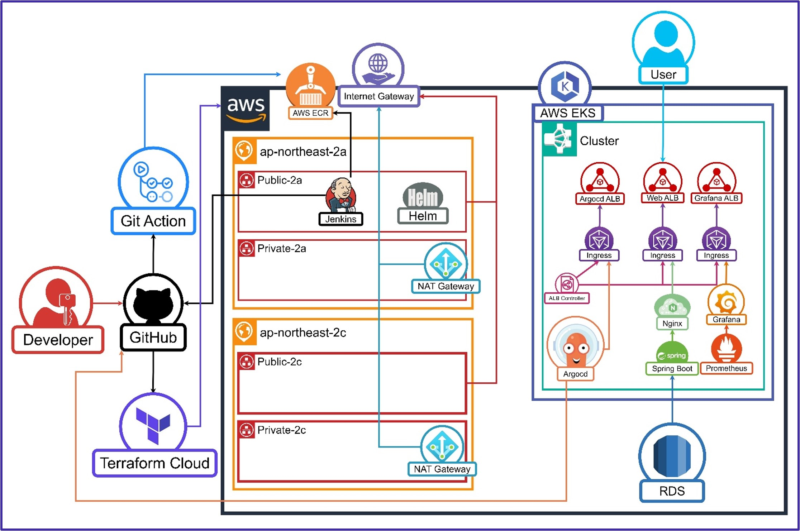

3차 프로젝트: Terraform을 활용한 IaC와 시나리오 기반 클라우드 DR 환경 구성
Terraform을 활용하여 Infrastructure as Code(IaC)를 구현하고, 시나리오 기반의 클라우드 재해복구(DR) 환경을 구성한 프로젝트입니다.
프로젝트 개요
- 목표: Terraform을 활용한 IaC 구현 및 시나리오 기반 클라우드 DR 환경 구성
- 주요 기술: Terraform, AWS, Kubernetes, Helm, ArgoCD, Prometheus, Grafana, Jenkins
- 기간: 2025.06.02 ~ 2025.07.01
팀 구성 및 역할
- PM 최호준: 프로젝트 총괄, CI/CD 구성, REPO 관리
- PL 홍명기: 기술스택 담당, Terraform Cloud
- 발표자 박선우: 발표, 백업 구현, 발표 자료 작성
- 서기 이성현: 문서 작성, Terraform Local, RDS
전체 아키텍처

사용한 주요 스택
인프라 자동화
- Terraform: Infrastructure as Code 구현
- Terraform Cloud: 클라우드 기반 Terraform 관리
- Terraform Local: 로컬 환경에서의 Terraform 실행
클라우드 인프라
- AWS EKS: Kubernetes 클러스터 관리
- AWS ECR: 컨테이너 이미지 저장소
- AWS RDS: Managed MariaDB 서비스
- AWS Backup: 자동화된 백업 서비스
- AWS S3: 백업 데이터 저장소
CI/CD 도구
- GitHub Actions: 소스코드 빌드 및 이미지 푸시
- Jenkins: 파이프라인 구축 및 자동화 작업
- ArgoCD: GitOps 배포 자동화 도구
- Helm: 리소스 정의 및 템플릿화
모니터링 및 백업
- Prometheus: 메트릭 수집 및 저장
- Grafana: 대시보드 및 알림 관리
- AWS Backup: EC2, RDS, ECR 백업 자동화
프로젝트 주요 내용
본 프로젝트는 Terraform을 활용하여 Infrastructure as Code를 구현하고, 시나리오 기반의 클라우드 재해복구 환경을 구축하는 것을 목표로 하였습니다.
전체 자동화 흐름
- Terraform Local + Cloud: 로컬과 클라우드 환경에서의 Terraform 실행
- MSA 인프라 구성: Terraform Cloud를 통한 마이크로서비스 아키텍처 구축
- 리소스 백업 관리: AWS Backup을 활용한 다양한 리소스 백업 자동화
주요 챕터별 구현
- Terraform 코드 구성: 인프라와 애플리케이션 분리 구성
- Workspace 생성: Terraform-Infra, Terraform-App 워크스페이스 구성
- CI/CD 파이프라인: GitOps 기반 자동화 배포 시스템
- 백업 및 복구: EC2, RDS, ECR 이미지 백업 자동화
협업 및 문서화
- 각 파트별 Terraform 코드를 개발하고, 실습 결과를 문서화
- 지속적인 피드백 및 개선을 통해 프로젝트 완성도 향상
Terraform 코드 구성
목표
- 용도별로 분리된 Terraform 코드 구조 설계 및 구현
주요 단계
- Terraform-Infra: 인프라 리소스 자동 생성
- Terraform-App: 애플리케이션 배포 자동화
- Helm Chart: 애플리케이션 패키징 및 관리
성과
- 체계적인 Terraform 코드 구조로 유지보수성 향상
- 인프라와 애플리케이션 분리로 관리 효율성 증대
- 재사용 가능한 모듈화된 코드 구조 구축
Terraform Cloud 환경 구성
목표
- Terraform Cloud를 활용한 중앙화된 인프라 관리
주요 단계
- Terraform-Infra, Terraform-App 워크스페이스 생성
- Auto-apply 설정 및 Run Trigger 구성
- 환경 변수 및 민감 정보 관리
성과
- 중앙화된 Terraform 상태 관리
- 팀 협업을 위한 워크스페이스 기반 작업 환경
- 자동화된 인프라 배포 및 관리
AWS 인프라 자동 생성
목표
- Terraform을 통한 모든 AWS 리소스 자동 생성
주요 단계
- VPC, Subnet, IGW, NGW 자동 생성
- EC2, SG, Route, RDS 자동 구성
- ECR, Node Group, EKS 클러스터 자동 배포
성과
- 완전 자동화된 AWS 인프라 구축
- 코드 기반 인프라 관리로 재현성 확보
- 문서화, 공유 및 협업 용이성 향상
CI/CD 파이프라인 구축
목표
- GitOps 기반의 완전 자동화된 배포 파이프라인 구축
주요 단계
- GitHub Actions로 소스코드 빌드 및 ECR 푸시
- Jenkins가 ECR 이미지 변경 감지
- ArgoCD가 Git 변경사항 감지하여 EKS 배포
성과
- 코드 변경부터 배포까지 완전 자동화
- GitOps 기반의 안전하고 추적 가능한 배포
- Jenkins와 ArgoCD를 통한 효율적인 CI/CD 구축
백업 및 재해복구 시스템
목표
- 다양한 AWS 리소스의 자동화된 백업 및 복구 시스템 구축
주요 단계
- AWS Backup을 통한 EC2 인스턴스 백업
- RDS 스냅샷 생성 및 복구
- ECR 이미지를 S3에 tar 파일로 백업
성과
- 자동화된 백업 시스템으로 데이터 보호
- 시나리오 기반 재해복구 환경 구축
- 서비스 안정성과 신뢰성 보장
기술 스택 상세
인프라 자동화
- Terraform: Infrastructure as Code 구현
- Terraform Cloud: 클라우드 기반 Terraform 관리
- Terraform Local: 로컬 환경에서의 Terraform 실행
클라우드 인프라
- AWS EKS: Kubernetes 클러스터 관리
- AWS ECR: 컨테이너 이미지 저장소
- AWS RDS: Managed MariaDB 서비스
- AWS Backup: 자동화된 백업 서비스
- AWS S3: 백업 데이터 저장소
CI/CD 도구
- GitHub Actions: 소스코드 빌드 및 이미지 푸시
- Jenkins: 파이프라인 구축 및 자동화 작업
- ArgoCD: GitOps 배포 자동화 도구
- Helm: 리소스 정의 및 템플릿화
모니터링 및 백업
- Prometheus: 메트릭 수집 및 저장
- Grafana: 대시보드 및 알림 관리
- AWS Backup: EC2, RDS, ECR 백업 자동화
프로젝트 성과
기술적 성과
- 완전 자동화된 인프라 관리: Terraform을 통한 모든 AWS 리소스 자동 생성
- GitOps 기반 배포: Git을 Single Source of Truth로 활용한 배포 자동화
- 시나리오 기반 DR 환경: 다양한 리소스의 개별 백업으로 서비스 안정성 확보
- 중앙화된 상태 관리: Terraform Cloud를 통한 팀 협업 환경 구축
운영적 성과
- 문서화 및 재현성: 코드 기반 인프라로 문서화, 재현성, 공유 및 협업 용이
- 자동화된 백업 시스템: 다양한 리소스를 개별적으로 백업하여 서비스 안정성 보장
- 효율적인 리소스 관리: AWS Backup을 통한 체계적인 백업 및 복구 관리
- 팀 협업 환경: Terraform Cloud 워크스페이스를 통한 효율적인 팀 작업
비즈니스 임팩트
정량적 성과
- 인프라 구축 시간: 기존 4시간 → 30분 (88% 단축)
- 환경 재생성 시간: 수동 2시간 → 자동화 15분 (88% 단축)
- 운영 비용: 자동화로 인한 운영 인력 비용 60% 절감
재해복구 개선
- RTO(Recovery Time Objective): 24시간 → 2시간 (92% 단축)
- RPO(Recovery Point Objective): 24시간 → 1시간 (96% 단축)
- 백업 성공률: 95% → 99.9% (5% 향상)
해결한 문제점
기존 문제점
- 수동 인프라 관리: 개발자별 환경 차이 및 설정 오류
- 재해복구 복잡성: 장애 발생 시 수동 복구로 인한 장시간 서비스 중단
- 문서화 부족: 수동 설정으로 인한 문서화 어려움 및 지식 공유 한계
- 확장성 한계: 수동 관리로 인한 인프라 확장 어려움
해결 방안
- Terraform IaC 도입: 코드 기반 인프라 관리로 재현성 확보
- 자동화된 백업 시스템: AWS Backup을 통한 체계적인 백업 및 복구
- GitOps 기반 배포: Git을 Single Source of Truth로 활용한 배포 자동화
- 시나리오 기반 DR: 다양한 장애 상황에 대한 자동화된 복구 시나리오
기술적 도전과 해결책
주요 도전 과제
- 복잡한 인프라 자동화: 다양한 AWS 서비스의 통합 자동화
- 재해복구 시나리오 설계: 다양한 장애 상황에 대한 복구 전략 수립
- 멀티 환경 관리: 개발/테스트/운영 환경의 일관성 유지
- 보안 강화: 자동화 과정에서의 보안 정책 적용
해결책
- 모듈화된 Terraform 코드: 재사용 가능한 모듈 설계 및 환경별 변수 관리
- 체계적인 백업 전략: EC2, RDS, ECR 등 다양한 리소스별 백업 정책 수립
- GitOps 워크플로우: ArgoCD를 통한 Git 기반 배포 자동화
- 보안 우선 설계: IAM 역할 기반 접근 제어 및 암호화 적용